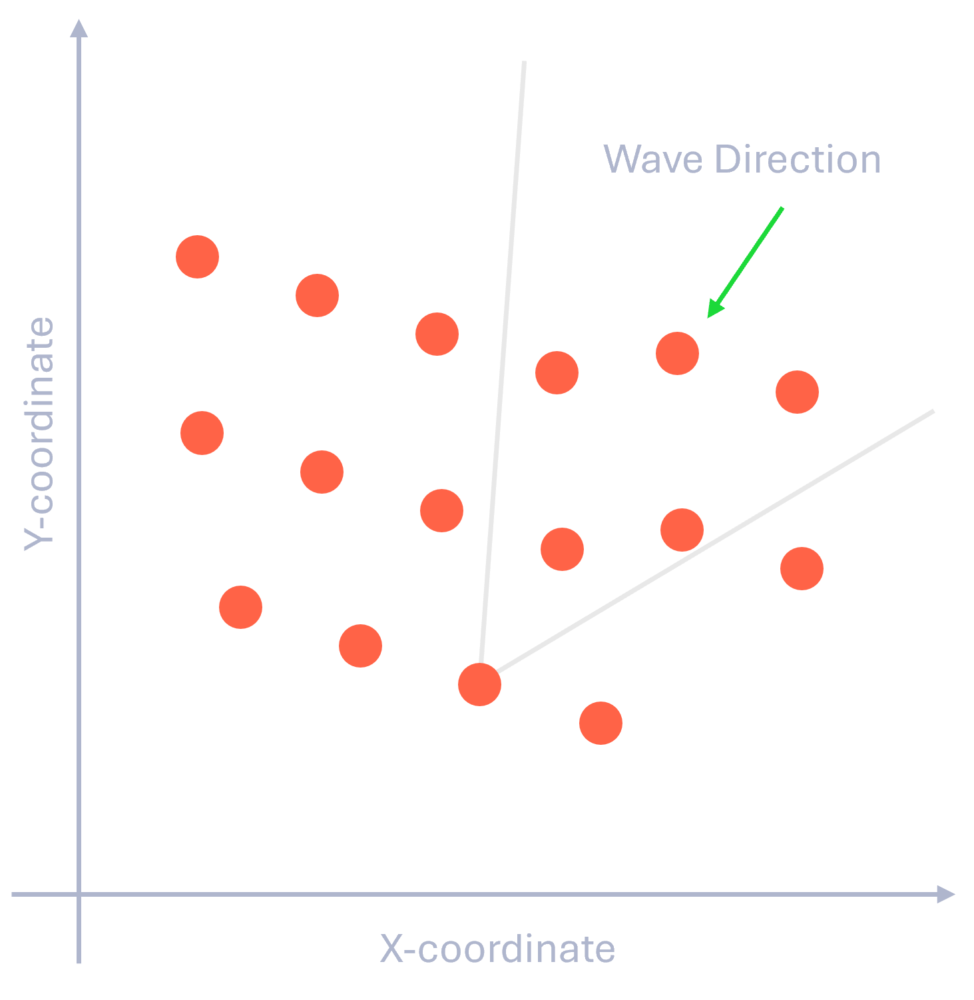
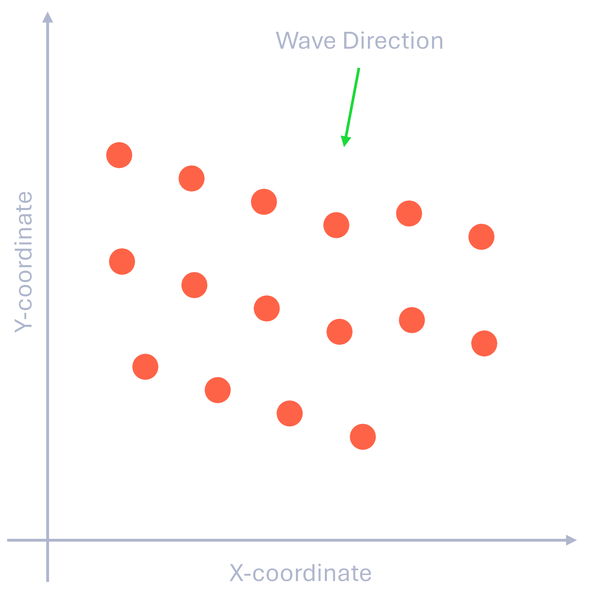
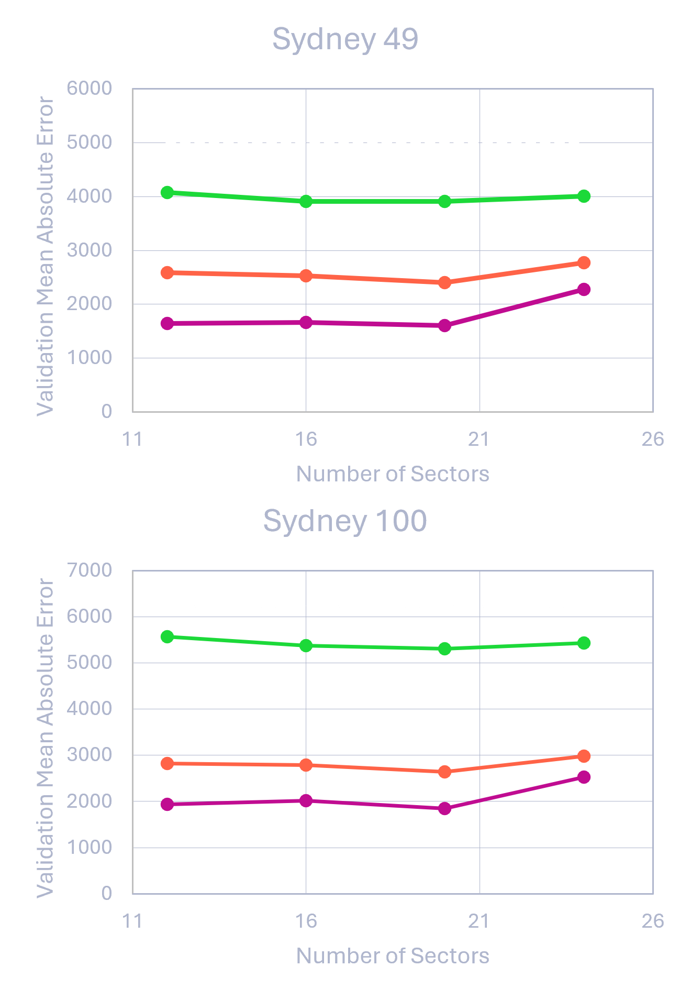
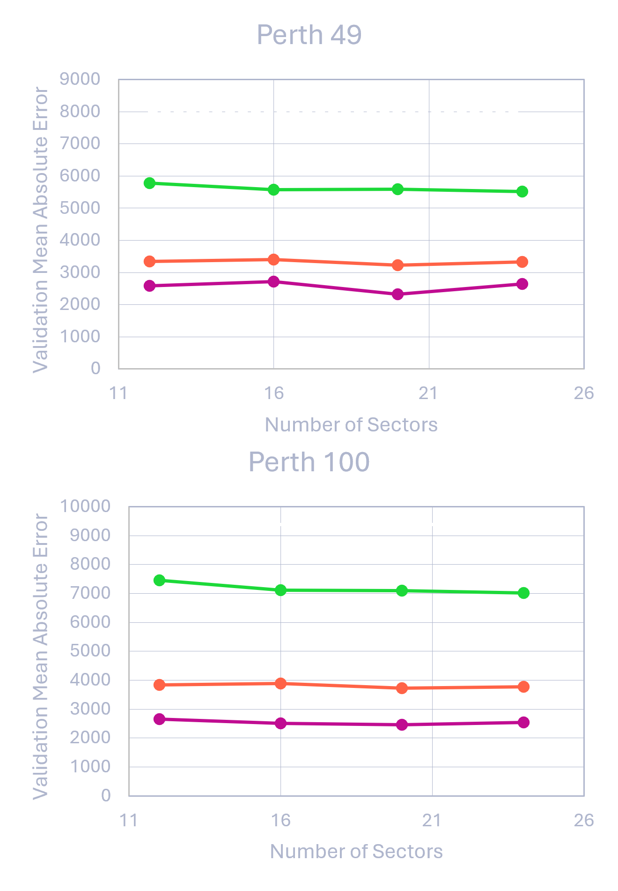

We are in the midst of a climate crisis.
Perhaps at the center of this crisis is the unyielding growth in demand for power and the subsequent deficit in supply that must be made up by sustainable and renewable energy sources.
The U.S. Energy Information Administration (or EIA) has predicted that, by the year 2050, the world will require the capacity to generate 45 trillion kilowatt-hours.
Unfortunately, according to the Center for Climate and Energy Solutions, only 29% of the power generated in 2020 was sourced from renewables.
Perhaps unsurprisingly, solar and wind power currently dominsate the renewable energy sector.
In the U.S., for example, the EIA reports that almost half of the renewable energy created for domestic use comes from wind while slightly less than a fifth comes from solar.
With the sun harnessed by solar panels and the wind harnessed by wind turbines, it begs the question: what about water?
Of course, dams can be build to generate power from rivers, but what about oceans?
Oceans cover more than 70% of the globe.
Can their movement be effectively captured and harnessed as a source of power?
As it turns out, yes!
The technology to harness the power of ocean waves is rapidly being developed and deployed to coastal areas around the world.
Consider Carnegie Energy's CETO buoy Wave Energy Converted (or WEC).
A rendering of one of these WEC modules is shown here on the right.
Carnegie's CETO buoy system is capable of converting the motion of the waves into mechanical energy for direct use in power generation.
In a sense, the concept of capturing energy from waves is not surprising.
After all, wind farms collect energy from the motion of fluid (air), why shouldn't we build "wave farms" to collect energy from the motion of water?
This can (and is) done.
However, some challenges exist that make the design of wave farms more difficult than their wind and solar counterparts.
For example, different geographical regions can have drastically different types of waves and systems designed to capture one type of wave may not effectively harness other types of waves.
In addition to this, hydrodynamic interactions between individual WEC modules accumulate to make the design and optimization of large farms extremely difficult.
Current computational techniques to optimize the design of such farms are faced with the challenges associated with a multi-modal search space and high computational costs.
Figure 1: Carnegie Energy CETO buoy system.
This is where a very interesting dataset comes into play.
In 2020, researchers at the University of Adelaide led by Dr. Mehdi Neshat published a paper titled "Optimization of Large Wave Farms Using a Multi-Strategy Evolutionary Framework."
In their paper, they develop and discuss another algorithm to optimize the arrangement of WEC modules in wave farms.
During the development of their algorithm, they ran a series of simulations that produced a large quantity of data pertaining to the positions of WEC modules as well as the resulting efficiency and gross power output of the farm.
The dataset contains the layouts of various wave farms and their resulting simulated power generation capacity and efficiency.
The layout information provides the coordinates for each buoy in the farm in terms of a 2D XY-plane.
Each of the points represents the position of a buoy in the farm as the coordinates marked by the x and y-axes in meters.
The average annual power generation capacity in Watts is recorded for each of the buoys as well as the farm as a whole.
Note that the total farms' capacity is just the sum of the individual buoys' output, it is not predicted separately.
The efficiency of the farm is recorded in terms of what is called the Q-factor.
The Q-factor is a dimensionless number that essentially says how much better or worse the farm's generating capacity is as a fraction of the theoretical capacity of each of its parts.
So, it tells us how badly the hydrodynamic interactions between the buoys are degrading the performance of the farm as a whole.
Also note that this dataset contains data on farms with either 49 or 100 buoys that were simulated in wave environments found off the coasts of one of two Australian cities: Sydney or Perth.
The structure of this dataset lends itself well to any of the following tasks:
1. Given the coordinates of the buoys, predict each of their power generation capacities (so, predict the power generated by each of the buoys in the farm).
2. Given the coordinates of the buoys, predict the total power generation capacity of the farm.
3. Given the coordinates of the buoys, predict the farm's Q-factor (which is, again, a measure of the farm's relative efficiency).
Initially, it would make more sense to use the coordinates of the buoys in the farm to predict the total farm's power generating capacity and its Q-factor.
These two targets are the most iportant and would keep things relatively simple (predicting two things would be less messy than prediction 49 or 100 things).
Unfortunately, it was soon realized that this approach would run into some serious problems.
The biggest problem is related to the buoy's individuality.
In reality, all of the buoys in the farm are identical.
The only difference between the buoys is their position within the farm.
So, if buoys within the farm were exchanged (but the same coordinates are always occupied), the farm should still generate the same amount of power.
The problem is, since the list of buoys in each of the farms from the dataset is ordered, it may appear that some buoys are better or worse than others.
To explain this, let's take a look at an example.
Figure 2: Illustration of "learning" of buoy ordering. Changing the order of buoys changes the power output (even though it shouldn't).
Let's say we have used multiple linear regression to predict the farm's output from the coordinates of the buoys.
For the sake of these calculations, we will use the data from the 49-buoy farms simulated off the coast of Perth, but we could use data from any of the other farms.
Now, if we try to predic the capacity of a new farm, we just feed the model the coordinates of the 49 buoys and get a result, as represented in this image on the left.
That's fine, but what if we feed the model the same coordinates in a different order? Looking at the figure again, we see we get a different result.
This is not acceptable and does not reflect reality.
Since the buoys are identical, it doesn't matter what order they are in.
It only matters where the buoys are located.
Swapping the buoys around shouldn't make a difference in the farm's output.
What's happening is that the model is "learning" how the researchers have ordered the buoys in each of the farm's layouts.
It is incorrectly assuming that the ordering of the buoys' coordinates matters.
The easiest way to get around this problem is to instead predict the individual power generation output of each of the buoys.
This way, each simulated farm layout is essentially split into multiple observations of individual buoys.
The graphic shown in Figure 3 helps to illustrate this process, where we go from each row representing a whole farm (with the coordinates and power outputs for all of its buoys) to each row representing only a single buoy from a farm.
So, using the example from above, each farm with 49 buoys becomes 49 instances of one buoy where we have two predictors (x and y-coordinates) and only one target, the buoy's power generation capacity.
Now the order of buoys won't matter, as it simply corresponds to the order of the entries in the dataset.
Keep in mind, though, that since we still know which buoys came from which farms, we can still predict the total power output of the farm (since it's just the sum of the individual buoy power outputs).
This also means that, if needed, features that are specific to the geometry of a particular farm layout can be incorporated.
The usefulness of this will be explored more later with a discussion on feature engineering.
Figure 3: Splitting data to focus on power output of individual buoys instead of total farm power output.
Splitting the data like this also has the unintended benefit of, in some sense, giving us more instances to work with.
The original datasets for each of the four sizes and locations become much larger when we look at each buoy individually.
The only downside to splitting the dataset is that we can no longer predict the farm's Q-factor.
Unlike the total farm output, the Q-factor can't be calculated from the power outputs of the individual buoys.
All things considered, this is a relatively minor inconvenience as power output (both total and individual) is arguably the most immediately interpretable target to use when attempting to optimize a wave farm.
Thus, this is an easy sacrifice to make.
Building a model with the current data is possible, but would likely not be sufficient.
That is, the coordinates of the buoys alone are not enough to accurately and reliably predict the power output.
Recalling the earlier discussion, it was revealed that the hydrodynamic interactions between the buoys were the main complicating factor in the design and optimization of wave farms.
So, it would make sense intuitively if the hydrodynamic effects of neighboring buoys were in some way responsible for the variance in the data not explained by the coordinates alone.
Thus, it would likely be helpful to use feature engineering to create new features that could account for the interactions that coordinates alone do not.
There are multiple ways the effects of neighboring buoys could be incorporated into a model.
However, all of these methods essentially seek to find a way to give buoys scores that quantify how many neighbors it has, where those neighbors are in relation to it (left, right, up, down), and how far away those neighbors are.

Figure 4a: Splitting data to focus on power output of individual buoys instead of total farm power output.

Figure 4b: Splitting data to focus on power output of individual buoys instead of total farm power output.

Figure 4c: Splitting data to focus on power output of individual buoys instead of total farm power output.
Intuitively, it would make sense to try, for each buoy, to evaluate how many buoys are "in between" the buoy of interest and the directions from which the waves are arriving.
So, for example, if the waves are arriving from the northeast, then for each buoy, we could create a new feature measuring how many other buoys are to its northeast.
Mathematically, this would be quantified as the sum of buoys within a wedge northeast of the buoy of interest.
This concept is visualized in Figure 4a where the waves are arriving from the top right and each buoy considers a wedge aiming at that direction.
Unfortunately, this method has some shortcomings.
The most serious is that it cannot generalize to situations where waves are coming from multiple opposing directions and different magnitudes are associated with each direaction.
This happens quite often in real life and was accurately simulated by the original researchers for both the Perth and Sydney locations.
Another option would be to construct some type of "kernel" that accounts for both the directionality and distance of the neighboring buoys.
This method is visualized in Figure 4b.
Some of the same problems arise here as before, though, where it would become very difficult to adapt to general cases where many different wave amplitudes could be arriving from many different directions.
Finally, to keep things simple, instead of trying to specify the directionality of the waves, features could be made to separately account for each direction.
This essentially ammounts to separating the area around each buoy into a fixed number of sectors (see the visualization in Figure 4c).
Neighbors are tallied for each of these sectors to provide a sense of directionality without having to adapt to every possible wave scenario.
If waves are arriving from multiple directions, then the sectors corresponding to those directions should be good predictors of the generating capacity while sectors corresponding to directions where waves do not come from will have mild to no effect on the generating capacity of the buoy.
To account for a sense of distance between the buoys, another set of features can be developed to assign a score to each of these sectors that takes the distances to neighboring buoys into account.
However, this method cannot simply use the distances due to how distance is encoded.
If a buoy has no neighbors in some sector, that sector must encode the distance as zero since infinity is not supported by machine learning methods.
So, the awkward case would arise with high predictions for power capacity with distances of zero, lower predictions for power with small distances scores, and then higher predictions again as the distances increase.
Thus, it is likely that the power generating ability of a buoy would not be a monotonic function of the sector-wise distance.
To avoid this problem, a kind of Gaussian transformation of the distance (where the distance score is "e" raised to the negative of the distance) can be used.
This means that buoys with no neighbors have a distance score that is asymptotically approaches zero, buoys with far away neighbors have a very low score, and buoys with near neighbors have higher scores approaching some constant.
This way, the power capacity is monotonic with respect to the distance score (hopefully making the data easier to fit).
These ideas developed above were used to create three types of "scores" to quantify the environment surrounding each buoy.
The first of these is the neighbor sector count.
For each buoy, it just quantifies how many neighboring buoys are found in each surrounding "sector".
Since this is repeated for each buoy, we essentially add as many features as sectors.
The second score is the sector-wise average transformed distance.
It records the average of the distance score (discussed earlier) for each of the sectors surrounding each buoy.
It also adds as many features as there are sectors.
Finally, the third score is the sector-wise minimum transformed distance.
As the name suggests, it records the minimum of the distance score for each sector around each buoy.
Again, it adds as many features as there are sectors.
The goal of keeping the average and minimum distance scores separate was to hopefully allow the differentiation of instances where a buoy has only one neighbor that is very close or a large number of neighbors that are not too close.
The effectiveness of these three different scores can be evaluated by training and validating a set of multivariate linear regression models.
The first of these models only uses the XY-coordinates of the buoys (that is, no feature engineering).
The second model uses the buoy coordinates as well as the sector neighbor counts as predictors.
The third model uses the coordinates, the sector neighbor counts, and the sector-wise distance average scores.
Finally, the last model uses the coordinates along with all three of the scores that were developed (neighbor counts, average distance, and minimum distance).
In these runs, the number of sectors that the space surrounding each buoy is cut into was varied.
Here, models with 12, 16, 20, and 24 sectors are evaluated.
In Figure 5, the performance of the four types of farms across all tested numbers of sectors is displayed.
The dashed lines represent the the performance of the model that only used the buoy coordinates (that's why it does not vary with the number of sectors).
The green lines represent the performance of the linear regression models using the coordinates with the sector-wise neighbor count information.
When the linear regression model is fit with the addition of the sector-wise distance average scores, it is clear that the mean absolute error drops significantly on the validation set (as represented by the orange lines)
Similarly, fitting the linear regression models to all available data (including the sector-wise distance minimum scores) decreases the error on the validation set further (as can be seen by the pink lines).
Comparing the quality of the linear models fit to all the subsets of data, it becomes obvious that that (in all cases) the best performing model is the one that uses the coordinates, the sector counts, and the sector-wise average and minimum distances.
Thus, it appears that all three of the scores that were developed earlier benefit the performance of the linear regression models.
As a result, future models will only be evaluated when utilizing all of the engineered features (no subsets).
At this point, a model more flexible than linear regression was sought in an attempt to better fit the data.
While experimenting with the data, it was observed that the buoys usually fell into repeating grid-like patterns.
This is likely a result of the optimization algorithm that the original authors used to develop these datasets.
Since tree-based regressors are capable of "parsing up" the dataspace into grids, this appeared to naturally suggest the application of a random forest regressor.


At this point, a model more flexible than linear regression was sought in an attempt to better fit the data.
While experimenting with the data, it was observed that the buoys usually fell into repeating grid-like patterns.
This is likely a result of the optimization algorithm that the original authors used to develop these datasets.
Since tree-based regressors are capable of "parsing up" the dataspace into grids, this appeared to naturally suggest the application of a random forest regressor.